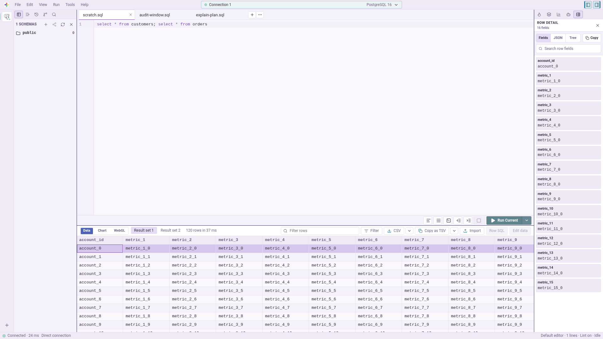

CodeMirror editor
SQL 補完、検索/置換、hover inspection、metadata jump、format、Vim mode。
Open-source database workbench
Rust / Tauri 製のオープンソース DB クライアント。 SQL 実行、スキーマ確認、大きな結果の閲覧を一つの作業面にまとめます。

Features
エディタ、スキーマ、結果、履歴、ERD、export を一つの workbench にまとめます。
SQL 補完、検索/置換、hover inspection、metadata jump、format、Vim mode。
tables、views、columns、indexes を素早く確認。
大きな結果、Save Changes、選択行からの Row SQL を扱います。
Hive、Snowflake、DuckDB/Iceberg 向けの hash 検証と diff SQL。
commit graph、ref filter、keyboard navigation。
MIT OR 0BSD。設計と進捗も公開。
Performance
行・列仮想化、streaming、disk offload で UI 側の負荷を抑えます。
表示範囲だけ描画。
結果を受け取りながら表示。
必要なページだけ取得。
フロント側の標準保持数。
Site search
公開ドキュメントをブラウザ内で検索できます。外部送信はありません。
キーワードを入力してください。
Documentation
使い方は公式 docs、詳細な設計・進捗は GitHub docs にまとめています。
Download
Preview release。Linux AppImage とソースコードを公開しています。